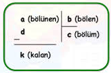

a, b, c, d, ve k birer doğal sayı, b ≠ 0 olmak üzere,

Bölme işleminde;
a : bölünen
b : bölen
c : bölüm
k : kalan ise
a = b.c + k biçiminde gösterilir.
Bir bölme işleminde;
| Burada sırasıyla 2, 3, 4, 5, 6, 7, 8, 9, 10, 11 ve 25 ile bölünebilme kuralları verilmiştir. | |
| 2 ile bölünebilme | Her çift sayı 2 ile tam bölünür. Tek sayılar 2 ile tam bölünemeyip 1 kalanını verir. |
|
3 ile bölünebilme |
Rakamlarının toplamı 3 ün katı olan sayı 3 ile tam bölünür. Kalan, rakamlar toplamının 3 ile bölümünden kalana eşittir. |
| 4 ile bölünebilme | Bir sayının son iki basamağı 4 ün katı ise bu sayı 4 e tam bölünür. Kalan son iki basamağında belirtilen sayının 4 ile bölümüne eşittir. |
| 5 ile bölünebilme | Bir sayının son rakamında 0 veya 5 bulunuyorsa o sayı 5 ile tam bölünür. Aksi halde kalan son basamağın 5 ile bölümünden kalana eşittir. |
| 6 ile bölünebilme |
Eğer bir sayı 2 ve 3 e tam bölünüyorsa 6 ya da tam bölünür. |
| 7 ile bölünebilme |
1, 3 ve 2 sayıları bir sayının sırasıyla birler, onlar ve yüzler basamağıyla sırayla çarpılır. Çıkan üçlü grupların toplamlarının farkı, o sayının 7 ile bölümünden kalana eşittir. |
| 8 ile bölünebilme | Bir sayının son üç basamağının oluşturduğu sayı 8 ile tam bölünüyorsa o sayı 8 ile tam bölünür. Kalan o sayının son üç basamağının oluşturan sayının 8 ile bölümünden kalana eşittir. |
| 9 ile bölünebilme | Rakamlarının toplamı 9 un katı olan sayı 9 ile tam bölünür. Kalan, rakamlar toplamının 9ile bölümünden kalana eşittir. |
| 10 ile bölünebilme |
Bir sayının son rakamı 0 ise o sayı 10 ile tam bölünür. Değil ise o sayının 10 ile bölümünden kalan, o sayının son (birler) basamağındaki rakama eşittir. |
| 11ile bölünebilme |
abcdef gibi bir sayının 11 ile bölümünden kalanı bulmak için birler basamağından itibaren birer atlanarak toplanır. Çıkan iki ayrı değerin farkının 11 ile bölümünden kalan, sayının 11 ile bölümünden kalana eşittir. |
| 25 ile bölünebilme | Bir sayının son iki basamağındaki sayı 25 in katıysa o sayı 25 ile tam bölünür. Aksi durumda son iki basamağından oluşan sayının 25 ile bölümünden kalan, o sayının 25 ile bölümünden kalana eşittir. |
Örnek:
120 sayısının asal çarpanlarını bulalım.
Çözüm:
120 = 23.3.5 tir.
120 nin asal çarpanları 2, 3, ve 5 tir.
Bir A sayısının asal çarpanlarına ayrılmış şekli;
A = xa.yb.zc olsun.